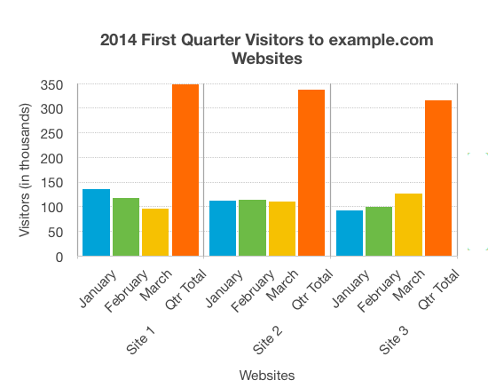

Images and diagrams are essential for careers in the fields of science, technology, engineering and mathematics. However, these crucial sources of information are not accessible to people with visual disabilities. The alt text attribute is frequently used to provide a summary of an image, but it is not sufficient for describing complex images, like a diagram of a hydraulic valve, or parts of the body like kidneys etc.
At this point of time, the most appropriate and cost effective solution for making complex images accessible is the use of extended descriptions. It enables authors and publishers to provide longer descriptions in well-structured text. The good news is that the Html 5 and ARIA specifications already have the features for supporting extended descriptions, but there are implementation challenges in the current state of web browsers, EPUB 3 reading systems and assistive technologies. Therefore we initiated an activity in our working group for evaluating the implementation shortcomings of different reading environments, and developing the best practices for authoring extended descriptions, which enables the users to understand the images in a wider range of EPUB reading environments.
It is possible that the recommendations for EPUB 3 environments provided in this report are a little different from the recommendations for the web environment. Though most of EPUB 3 reading systems use components from web browsers, the reading systems tend to change and sometimes override the web browser functionality, which results in a somewhat different reading experience.
It is important to highlight that the web browsers, EPUB 3 reading systems and assistive technologies are constantly improving, therefore, the recommendations may become outdated, and another round of evaluations would be required. Furthermore we will make the developers of reading technologies aware of the identified implementation gaps to facilitate resolution of the issues.
2. Evaluation Process
Step 1. The following techniques were developed:
<aria-details> is used on <img> element, and it is used by the user to move from image to the extended description placed in HTML details element. The image is placed inside figure element and the HTML details element with extended description is placed before the figcaption of the figure element.
<aria-details> is used on <img> element, and it is used by the user to move from image to the HTML details containing the extended description. The HTML details element follows the image in the reading order. In this technique no figure element is used.
<aria-details> is used on <img> element, and it is used by the user to move from image to the extended description, which is placed at end of current HTML file.
Hyperlink on text is used by the user to move to the extended description placed at the end of current HTML file. The expectation is that the hyperlink needs to take you to the exact position on the extended description and the back link should take you back to the original image.
<aria-describedby> points to an aside in a figcaption.
<aria-describedby> points to an aside at the end of chapter.
Use of role="presentation" on inline image and block image.
Expand HTML details containing a long extended description, and evaluate if the reading system adjusts the screen accordingly and provides ease of reading.
Collapse HTML details containing a long extended description, and evaluate if the reading system correctly adjusts the screen and pagination.
JavaScript is supported and enhancement to HTML details, prefers-reduced-motion media query works.
JavaScript is supported and enhancement to HTML details, pointer media query works.
Text hyperlink is used by the user to go to the exact position of the extended description placed on a separate HTML file, and the back links takes you back to the original position in the original file.
Text hyperlink is used by the user to go to a separate HTML file with a single extended description. The accuracy of the landing location on the description does not matter, because there is only a single description in the HTML file, but the back link must take you to the original position.
Text hyperlink is used by the user to go to a separate HTML file with single extended description. The accuracy of the landing location on the extended description as well as landing location while coming back is relaxed.
Step 2. The techniques were evaluated on Different configurations of reading environments. The following reading systems, operating systems, browsers and assistive technologies combinations were used:
Reading systems: Vital Source bookshelf online, Vital Source bookshelf desktop, Redshelf, Thorium desktop, Azardi, Dolphin Easyreader, Voice Dream, Apple Books and Google Playbooks.
Operating systems: Windows, Mac OS, iOS and Android.
Browsers used for reading systems plugins: Chrome, Firefox, Edge, and Safari.
Assistive technologies: JAWS, NVDA, Voiceover and Talkback.
3. Recommendations
After thorough evaluation, we are able to recommend three techniques at this point of time. These techniques worked in a majority of the reading environments. This does not guarantee very wide support, but these provide a way forward while the web browsers, EPUB reading systems and assistive technologies catch-up.
It is also recommended to include <aria-details> on the image which informs assistive technology that in addition to the alt text simple description there is also an associated extended description which the aria-detailsrefers to.
3.1 Technique 1: Extended description placed in HTML details element, just below the image
3.1.1 Advantages:
The extended description is provided just below the image, the next item in the reading order. This means that the user does not need to change from the reading flow, and lose their reading position.
The details element does not show the description by default, the user needs to expand it to show the description, therefore it does not clutter the page for users who do not need extended descriptions.
It is a good approach for publishers who do not want additional portions of description text visible on the page.
3.1.2 Disadvantages:
If a publication has a large number of images and extended descriptions, the task of locating the details, and expanding it to read descriptions puts considerable cognitive load, especially on the people with cognitive disabilities.
There are EPUB reading systems which do not support HTML details properly, and details element is always expanded. Such a situation clutters the page with a huge amount of text and makes it very difficult for everyone to read the publication.
Sometimes publishers need to create pixel perfect pages, and visibility of detail’s elements get in the way of achieving it.
If the extended description inside the details element is huge, expanding it may disorient the user, especially when the reading system has paginated view.
Code Example 1
<imgsrc="chart-ebcaadfb.png"alt="Bar chart showing monthly and total visitors for the first quarter 2014 for sites 1 to 3."aria-details="image1-extended-desc" /><detailsid="image1-extended-desc"><summary>Expand / collapse Extended Description</summary><div><h5>Overview</h5><p>The chart shows the website hits for the first quarter of 2014. It shows that Site 1 has more visitors
than either of the other sites, but the number of visitors is decreasing. Site 2 has a fairly constant
number of visitors, while for Site 3 page hits are increasing month on month.</p><h6>Data</h6><table><tr><thscope="col">Period</th><thscope="col">Site 1</th><thscope="col">Site 2</th><thscope="col">Site 3</th></tr><tr><thscope="row">Jan</th><td>135</td><td>112</td><td>92</td></tr><tr><thscope="row">Feb</th><td>117</td><td>114</td><td>99</td></tr><tr><thscope="row">Mar</th><td>96</td><td>111</td><td>126</td></tr><tr><thscope="row">Qtr Total</th><td>348</td><td>337</td><td>308</td></tr></table><h6>Presentation</h6><p>The bar chart represents both the number of visitors per month for each website, and the total number
of visitors per website for the entire quarter. Website visitors for each month are represented using
columns lined up horizontally, with heights indicating the number of visitors. A fourth column is
provided for each website with the accumulated site visitors for the quarter.</p></div></details>
Code Example 1 Preview

Expand / collapse Extended Description
Overview
The chart shows the website hits for the first quarter of 2014. It shows that Site 1 has more visitors
than either of the other sites, but the number of visitors is decreasing. Site 2 has a fairly constant
number of visitors, while for Site 3 page hits are increasing month on month.
Data
Period
Site 1
Site 2
Site 3
Jan
135
112
92
Feb
117
114
99
Mar
96
111
126
Qtr Total
348
337
308
Presentation
The bar chart represents both the number of visitors per month for each website, and the total number
of visitors per website for the entire quarter. Website visitors for each month are represented using
columns lined up horizontally, with heights indicating the number of visitors. A fourth column is
provided for each website with the accumulated site visitors for the quarter.
3.2 Technique 2: Provide a text hyperlink just below the image, which takes the user to a separate HTML file containing only one extended description, and provide a text hyperlink to return back to original reading position.
This technique looks simple, but it is worth mentioning that all reading system environments are not able to land the reading cursor at the exact location on the destination HTML file. Therefore, to avoid landing at the incorrect extended description, it is important to have only one extended description in the HTML file.
It is also recommended that on the separate page which has the extended description there should also be a copy of the same image marked as presentational. This would be useful for those who can see the image and may need to reference the image along with its extended description.
3.2.1 Advantages:
Simple technique, authors and publishers are already familiar with it.
Complexities due to collapsing and expanding are avoided, and fidelity of the page is maintained to a great extent.
Almost all the EPUB reading systems support the hyperlinks, however navigation to exact location in the destination HTML file may not be supported as well.
Including a copy of the original image can help cognative users with understanding the extended description in context with the image on the same page.
Making the copy of the image presentational, instead of repeating the alt text from the original image in the EPUB, prevents the same alt text description from being spoken twice to the screen reader user. Also, since the extended description fully describes the image in question no alt text is required here.
3.2.2 Disadvantages:
Results in branching from the reading flow and sometimes the reading position is also lost.
The inaccuracy of the landing position on the extended description does not matter because there is just one extended description on the HTML file, but accuracy of linking back to original reading position does matter, and some reading systems fail to provide this accuracy.
Having only one extended description on an HTML page can create some production challenges for a publication having a large number of complex images to describe.
Code Example 2
<p>Image with hyperlink pointing to the extended description.
<p>Example.com Site visitors Jan to March 2014</p><imgsrc="chart-ebcaadfb.png"alt="Bar chart showing monthly and total visitors for the first quarter 2014 for sites 1 to 3."aria-details="image2-link"><br/><aid="image2-link"href="./endOfBookDescriptionsSingle.xhtml#image2-extended-desc">Follow for extended description</a>
Extended description on a separate HTML file. It also shows smaller image for convenience of the users
<divid="image2-extended-desc"class="endDesc"aria-labelledby="barchart-desc"><h5id="barchart-desc">Description of Bar Chart</h5><imgsrc="chart-ebcaadfb.png"alt=""role="presentation"/><div><h6>Overview</h6><p>The chart shows the website hits for the first quarter of 2014. It shows that Site 1 has more visitors than either
of the other sites, but the number of visitors is decreasing. Site 2 has a fairly constant number of visitors,
while for Site 3 page hits are increasing month on month.</p><h6>Data</h6><table><tr><thscope="col">Period</th><thscope="col">Site 1</th><thscope="col">Site 2</th><thscope="col">Site 3</th></tr><tr><thscope="row">Jan</th><td>135</td><td>112</td><td>92</td></tr><tr><thscope="row">Feb</th><td>117</td><td>114</td><td>99</td></tr><tr><thscope="row">Mar</th><td>96</td><td>111</td><td>126</td></tr><tr><thscope="row">Qtr Total</th><td>348</td><td>337</td><td>308</td></tr></table><h6>Presentation</h6><p>The bar chart represents both the number of visitors per month for each website, and the total number of visitors
per website for the entire quarter. Website visitors for each month are represented using columns lined up
horizontally, with heights indicating the number of visitors. A fourth column is provided for each website
with the accumulated site visitors for the quarter.</p><p><aid="Image2DetailsBackLink"href="./testDetailsEndOfBookSingle.xhtml#image2-link">Navigate back to bar chart image.</a></p></div></div>
3.3 Technique 3: Encapsulating either Techniques 1 or 2 within a figure
This technique simply encapsulates either technique within a figure element.
Note: when adding a figcaption it is important that this be placed either before the first image or after the last image within the figure. I.E.: either immediately after
the <figure> tag or immediately before the end </figure> tag.
Note: when adding multiple images within a single <figure> there can be only one <figcaption> either at the top or bottom and each image should have its extended description <details> or link to the extended description immediately after the image. Note that when the images relate to each other, it may be best to have a single extended description after the final image that describes the images and their relationship.
3.3.1 Advantages:
Ability to add a <figcaption> that is linked semantically with the image(s)
Ability to group related images keeping their extended descriptions semantically linked with their respective image
3.3.2 Disadvantages:
If no <figcaption> is needed, there is added complexity of using the <figure> structure, and the potential for additional text spoken to assistive technology
Code Example 3
<p>Image with hyperlink pointing to the extended description, followed by another image with the extended description in a
<details> expandable structure, both of which are encapsulated with a
<figure> structure< with the <figcaption> provided at the top</p><figureid="image3"><figcaption>Example.com Site visitors Jan to March 2014</figcaption><imgsrc="chart-ebcaadfb.png"alt="Bar chart showing monthly and total visitors for the first quarter 2014 for sites 1 to 3."aria-details="image3-link"/><aid="image3-link"href="./endOfBookDescriptionsSingle3.xhtml#image3-extended-desc">Follow for extended description</a><br/><imgsrc="chart-ebcaadfb.png"alt="Bar chart showing monthly and total visitors for the first quarter 2014 for sites 1 to 3."aria-details="image4-extended-desc" /><detailsid="image4-extended-desc"><summary>Expand / collapse Extended Description</summary><div><h5>Overview</h5><p>The chart shows the website hits for the first quarter of 2014. It shows that Site 1 has more visitors
than either of the other sites, but the number of visitors is decreasing. Site 2 has a fairly constant
number of visitors, while for Site 3 page hits are increasing month on month.</p><h6>Data</h6><table><tr><thscope="col">Period</th><thscope="col">Site 1</th><thscope="col">Site 2</th><thscope="col">Site 3</th></tr><tr><thscope="row">Jan</th><td>135</td><td>112</td><td>92</td></tr><tr><thscope="row">Feb</th><td>117</td><td>114</td><td>99</td></tr><tr><thscope="row">Mar</th><td>96</td><td>111</td><td>126</td></tr><tr><thscope="row">Qtr Total</th><td>348</td><td>337</td><td>308</td></tr></table><h6>Presentation</h6><p>The bar chart represents both the number of visitors per month for each website, and the total number
of visitors per website for the entire quarter. Website visitors for each month are represented using
columns lined up horizontally, with heights indicating the number of visitors. A fourth column is
provided for each website with the accumulated site visitors for the quarter.</p></div></details></figure>
The chart shows the website hits for the first quarter of 2014. It shows that Site 1 has more visitors
than either of the other sites, but the number of visitors is decreasing. Site 2 has a fairly constant
number of visitors, while for Site 3 page hits are increasing month on month.
Data
Period
Site 1
Site 2
Site 3
Jan
135
112
92
Feb
117
114
99
Mar
96
111
126
Qtr Total
348
337
308
Presentation
The bar chart represents both the number of visitors per month for each website, and the total number
of visitors per website for the entire quarter. Website visitors for each month are represented using
columns lined up horizontally, with heights indicating the number of visitors. A fourth column is
provided for each website with the accumulated site visitors for the quarter.
A. Acknowledgments
This section is non-normative.
Ben Schroeter’s insights and implementations contributed greatly to our work. We all
will miss his good-natured contributions. This document is dedicated to his memory.
The following people contributed to the development of this document:
Avneesh Singh (DAISY Consortium)
Ben Schroeter (Pearson)
Charles LaPierre (Benetech)
Franco Alvarado (Macmillan Learning)
George Kerscher (DAISY Consortium)
Gregorio Pellegrino (Fondazione LIA)
James Yanchak (Taylor and Francis)
Jason White (Educational Testing Service)
Matt Garrish (DAISY Consortium)
Steve Noble (Pearson)
The task force would also like to thank the following people for their help designing techniques,
creating test books, synthesizing test results, and developing best practices:
George Kerscher (DAISY Consortium)
Charles LaPierre (Benetech)
Gregorio Pellegrino (Fondazione LIA)
Avneesh Singh (DAISY Consortium)
Ben Schroeter (Pearson)
James Yanchak (Taylor & Francis Group)
Additionally, thanks goes to the following people for their help testing the techniques: